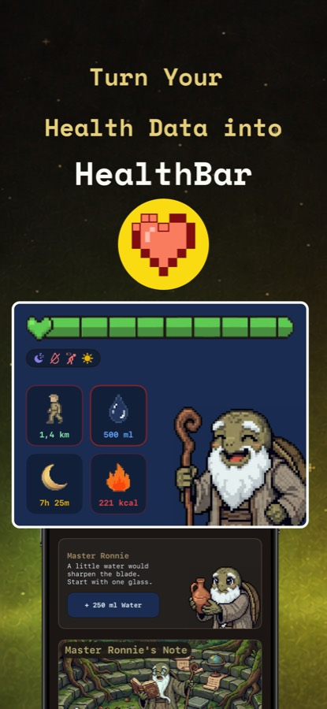
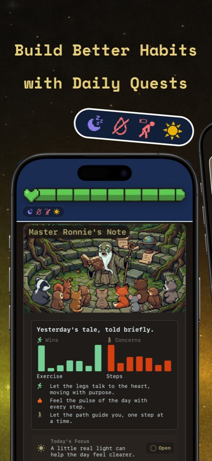
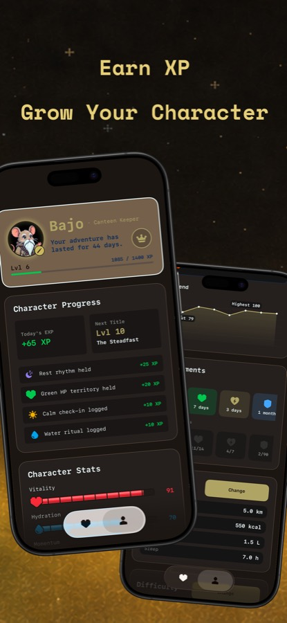
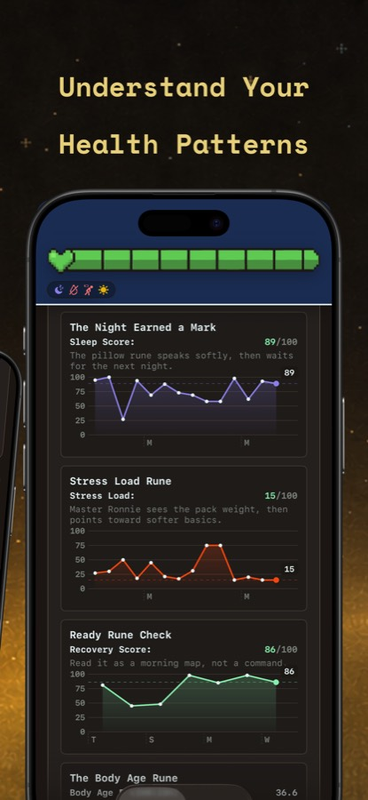
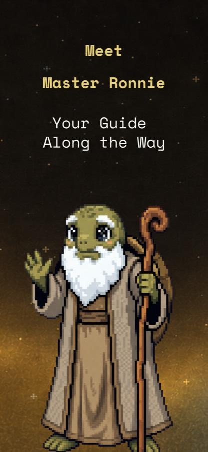
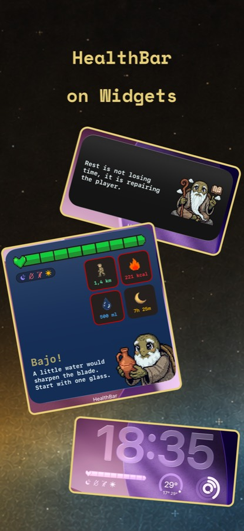
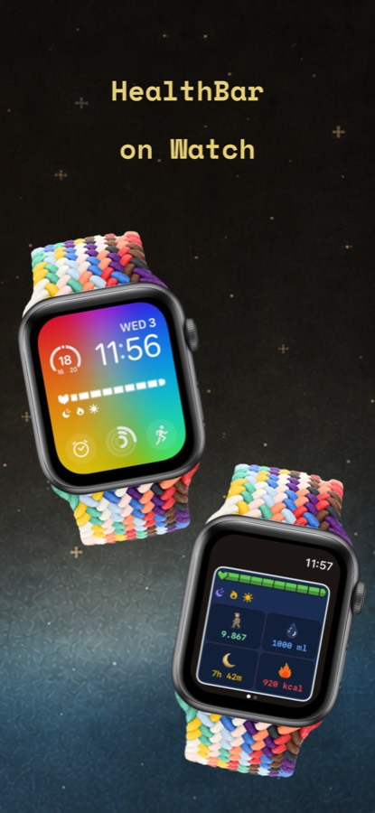

Connect Health
You choose which available Health data to share. HealthBar uses it to create your daily view.
A gentler read on your day
HealthBar turns your Health data into a simple HP bar, helpful patterns, and tiny quests—so the next small step feels easier to see.


One glance, then one small step
HealthBar brings movement, water, sleep, mood, and recovery into one approachable view.
You choose which available Health data to share. HealthBar uses it to create your daily view.
HP, buffs, and debuffs show what may be supporting or draining your day.
Master Ronnie suggests manageable actions like water, a walk, a mindful minute, or rest.
A friendly layer over Health data
Drag or swipe through the App Store story. It carries on automatically after you let go.







Nearby, not noisy
Check HP with widgets, Lock Screen widgets, Apple Watch, and complications—without turning your day into a dashboard.
Water, movement, rest, and mindful moments can all be part of the story.
Questions or feedback?
For account, privacy, subscription, or technical questions, email the independent developer behind HealthBar.